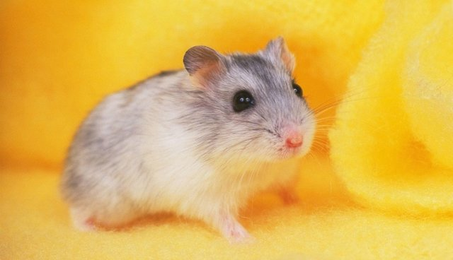

I am a rising senior who will be helping lead you through this year’s amazing session along with Lillian. In school, I enjoy many of my classes and the variety of courses I am able to take that allows me to explore my interests in different fields –– from AP English to Physics. I hope to receive a liberal arts undergraduate education that will continue to allow me take fascinating courses in school. Although I have absolutely no idea what career I would want to go in, I currently am interested technology, medicine, and entrepreneurship. Ideally, I would like to combine these multiple interests, start a company, and create new jobs! I’ve always enjoyed the various extracurricular activities offered to me at Stuy because I get to learn skills not taught in the classroom and meet new people! I am part of the Marketing and Sponsorship team of StuyHacks, Stuyvesant’s biannual student-run hackathon, the Assistant Director of CS for New York Youth Technology Team, where I organize student volunteers to teach middle schoolers coding, and a part of ARISTA’s Operations Committee. In my free time, you could probably find me napping, listening to Lo-Fi music, and bullet journaling. I’m extremely excited to meet and get to know all of you so don’t be afraid to send me a Pikachu surprise meme anytime!
Look at more hamsters